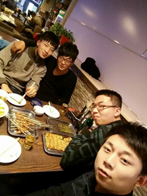

俞敏洪
北大是改变了我一生的地方，是提升了我自己的地方，是使我从一个农村孩子最后走向了世界的地方。毫不夸张地说，没有北大，肯定就没有我的今天。
我记得自己在北大时有很多苦闷，一是普通话不好，二是英语一塌糊涂。尽管我高考经过3年的努力考到了北大——我落榜了两次，最后一次很意外地考进了北大。实际上我的英语水平很差，在农村既不会听也不会说，只会背语法和单词。分班时，50个同学分成三个班，因为我的英语考试分数不错，就被分到了A班，一个月后，我就被调到了C班。C班叫做“语音语调及听力障碍班”。
我也记得自己进北大前连《红楼梦》都没读过，所以看到同学们一本一本书在读，我拼命地追赶。结果我在大学差不多读了800多本书，用了5年时间，但是依然没有赶超上我那些同学。
大学毕业时，我的成绩依然排在全班最后几名。但是，当时我已经有了一个良好的心态。我知道我在聪明上比不过同学，但是我有一种能力，就是持续不断地努力。毕业典礼上，我说：“大家都获得了优异的成绩，我是我们班的落后同学。我想让同学们放心，我决不放弃。你们5年干成的事情我干10年，你们20年干成的我干40年。如果实在不行，我会保持心情愉快、身体健康，到80岁以后把你们送走了我再走。”
有一个故事说，能到达金字塔顶端的只有两种动物，一是雄鹰，靠自己的天赋和翅膀飞了上去。我们这儿有很多雄鹰式的人物，很多同学不需太努力就能达到高峰。大家也都知道，另外一种动物也到了金字塔顶端，那就是蜗牛。蜗牛肯定只能是爬上去，从地上爬到上面可能要一个月、两个月，甚至一年、两年。（励志名言 www.lz13.cn）我相信蜗牛绝对不会一帆风顺地爬上去，一定会掉下来、再爬、掉下来、再爬。蜗牛只要爬到金字塔顶端，它眼中所看到的世界，它收获的成就，跟雄鹰是一模一样的。到今天为止，我一直认为自己是一只蜗牛。我一直在爬，也许还没有爬到金字塔的顶端。只要你在爬，就足以给自己留下令生命感动的日子。
我们这儿有富裕家庭来的，也有贫困家庭来的，生命的起点由不得你选择，但是生命的终点是由我们自己选择的。只要有两样东西在心中，我们就能成就自己的人生。
第一样叫做理想。我从小就有一种感觉，希望穿越地平线走向远方，我把它叫做“穿越地平线的渴望”。也正是因为这种强烈的渴望，使我有勇气不断地高考。当然，我生命中也有榜样。比如我有一个500年前的邻居，非常的有名，是我终生的榜样，他的名字叫徐霞客。因为崇拜徐霞客，直接导致我在高考时地理成绩考了97分。徐霞客给我带来了穿越地平线的感觉，我下定决心，如果徐霞客走遍了中国，我就要走遍世界。我现在正在实现自己这一梦想。所以，只要你心中有理想，有志向，你终将走向成功。你所要做到的就是在这个过程中要有艰苦奋斗、忍受挫折和失败的能力，要不断地把自己的心胸扩大，才能够把事情做得更好。
第二样东西叫良心。就是要做好事，要做对得起自己对得起别人的事情，要有和别人分享的姿态，要有愿意为别人服务的精神。有良心的人会从自己的生活中体现出来，而且你所做的事情一定对自己未来的生命产生影响。我来讲两个小故事。
我再来讲一下自己的故事。在北大时，我一直比较具备为同学服务的精神。我这个人成绩一直不怎么样，但从小就热爱劳动，希望通过勤奋的劳动来引起老师和同学的注意，所以我每天为宿舍打扫卫生，这一打扫就打扫了4年。我们宿舍从来没排过卫生值日表。另外，我每天都拎着宿舍的水壶去给同学打水，把它当做一种体育锻炼。大家看我打水习惯了，最后还产生这样一种情况，有时我忘了打水，同学就说“俞敏洪怎么还不去打水”。我并不觉得打水是一件多么吃亏的事情，因为大家都是一起的同学，互相帮助是理所当然的。又过了10年，到了1995年年底的时候新东方做到了一定规模，我希望找合作者，就跑到美国和加拿大找我的那些同学，他们大学时都是我生命的榜样。我为了“诱惑”他们回来还带了一大把美元，每天在美国非常大方地花钱，想让他们知道在中国也能赚钱。我想大概这样就能让他们回来。后来他们回来了，但是给了我一个十分意外的理由。他们说：“俞敏洪，我们回来是冲着你过去为我们打了4年水。”他们说：“我们知道，你有这样的一种精神，所以你有饭吃肯定不会给我们粥喝，所以让我们一起回中国，共同干新东方吧。”
人的一生是奋斗的一生，但是有的人一生过得很伟大，有的人一生过得很琐碎。如果我们有一个伟大的理想，有一颗善良的心，我们一定能把很多琐碎的日子堆砌起来，变成一个伟大的生命。如果你每天庸庸碌碌，没有理想，从此停止进步，那未来你一辈子的日子堆积起来将永远是一堆琐碎。所以，我希望所有的同学能把自己每天平凡的日子堆砌成伟大的人生。

We are the most powerful furnace stone bedroom!!!